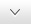

实时数据
查询
报表
设置
关于
帮助
切换用户
运行状态
正常
刷新频率
10
秒
已连接站数
12
个
未连接站数
8
个
更改时间
开始采集
每次采集只针对同一站点

实时数据
数据采集
灯光报警
声音报警
短信
短信
数据报警
5
条
查看警情
站情况(弹窗)
数据导出
站数据
组数据
电池数据
报警数据
环境温度
组电流
氢气浓度
氧气浓度
组温度
组湿度
柱线切换
超限
警告
关注
正常
系统启动时间：
08：08：08
当前管理员：
XXXX
登陆时间：
11：22：52
2015年11月30日 16:00 星期六